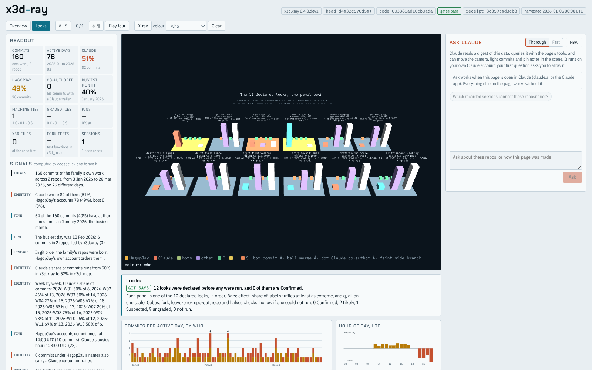

x3d.xray
x3d.xray reads a family of Git repositories, measures them with code rather than prose, and draws the result as a single X3D scene, with every sentence on the page tied to the number behind it. These demos run on synthetic data only: temporary Git repositories built for the demo, no real history. Source: github.com/hagopjay/x3d.xray.
Live demos

Explorer
The real page, built by the real pipeline from two synthetic repositories. Switch to Looks to see the twelve declared looks as small multiples inside the 3D scene. Click a panel for its card, then take the look into the notebook, which logs it in a hash chain you can export and replay.
Open the Explorer →Three examples of the exploratory stage
What does a Confirmed grade mean, and how often does pure noise earn one? What happens under Simpson's paradox? Why is the same answer worth less as the fortieth look than the thirteenth? Each example is run when the page is built and its printed output sits beside its source.
Read the examples →Not shown here: the Ask Claude panel only answers when the Explorer is open inside Claude, so on this site it says so. Everything else works without an account. Rendering was checked in headless Chromium with software WebGL (SwiftShader); no GPU frame-rate claim is made.
Field guides and laboratories
Earlier passes, kept as they were published. Each one is a standalone file.
| Page | Pass | What it is |
|---|---|---|
| Review | before 1 | Evidence Observatory review of upstream b3fec1f7307a: findings and a five-PR plan. |
| Development field guide | 1 | Engineering walkthrough, limits, exercises. |
| Bridge Laboratory | 1 | 57 synthetic observations; map and scores work offline. |
| Architecture field guide | 2 | Typed relations, scene gate, mutation audit, staged roadmap. |
| Architecture Observatory | 2 | 4 synthetic Git repositories, 24 commits, 13 XML audit cases. |
| Source, time and scale guide | 3 | Immutable Git witnesses, temporal semantics, a measured scale table. |
| Continuum Observatory | 3 | Exact-source witnesses, time lenses, nine scale specimens. |
Raw outputs those guides cite are in docs/evidence. Hashes in the evidence detect a changed file; they do not authenticate who produced it.
Notes
Demos are versioned by folder (demos/<name>/v1) and earlier versions stay where they are.
The Explorer ships X_ITE 16.7.0 (MIT licence, included beside it) and DejaVu Sans Mono for the scene labels (licence text included in its fonts folder).
Rebuild the Explorer with experiments/build_pages_explorer.py and the examples page with experiments/build_pages_examples.py.